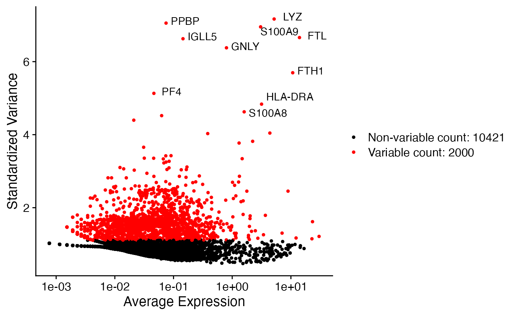
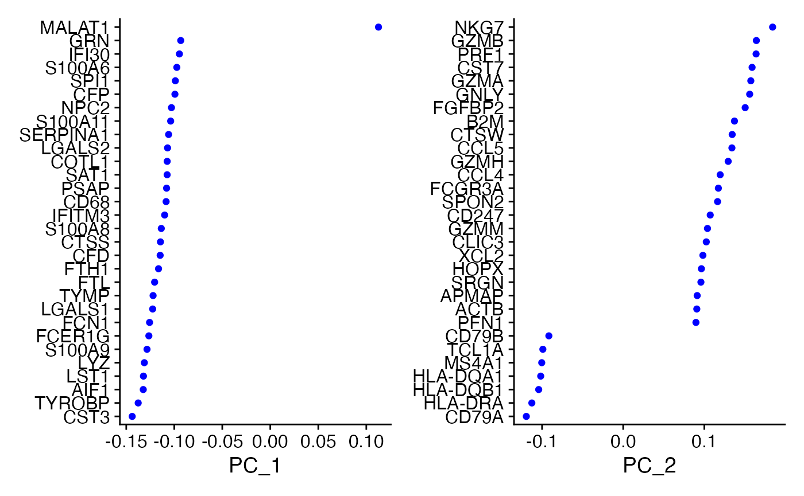
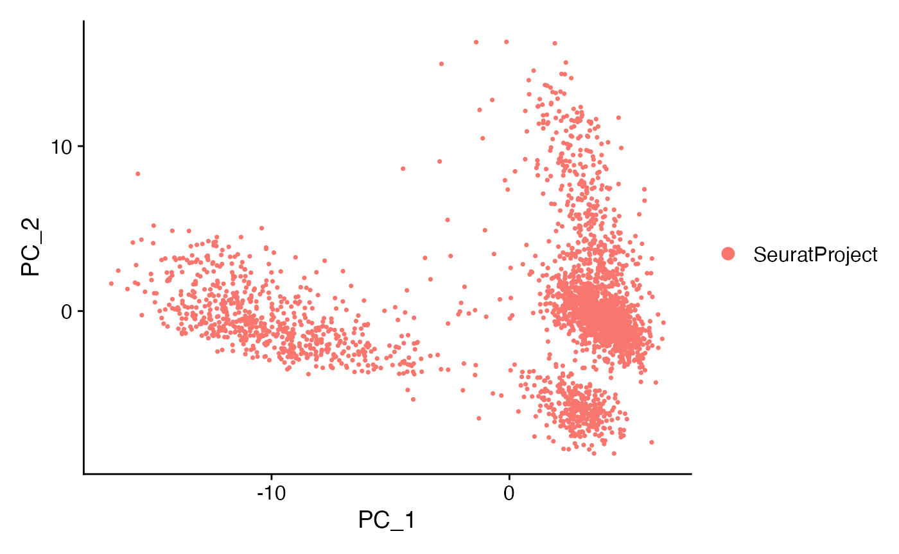
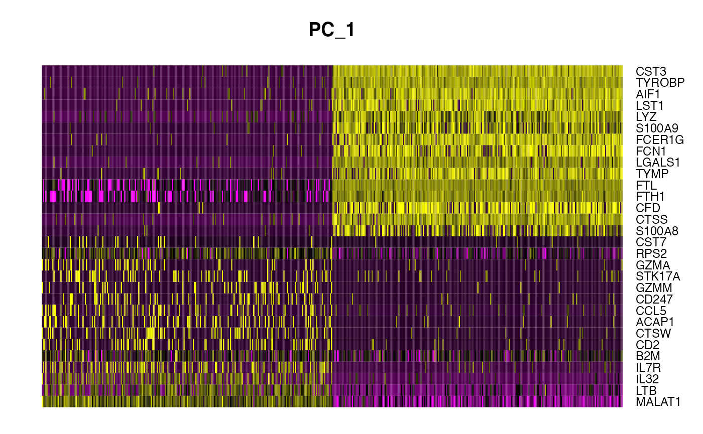
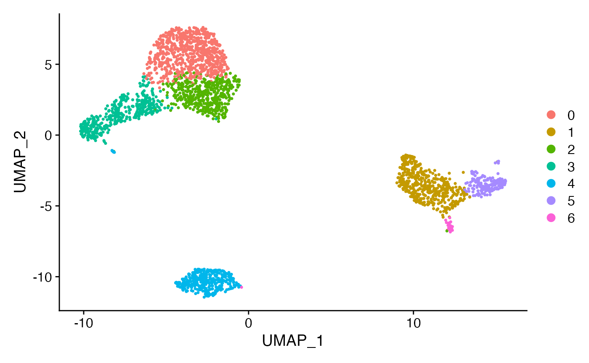
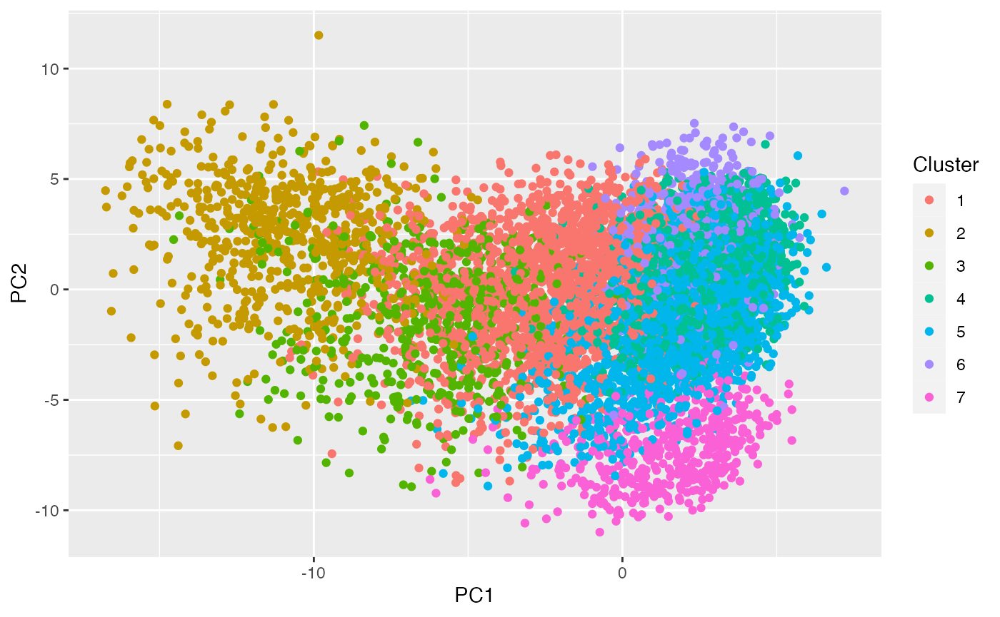

This tutorial is inspired by the Seurat clutering and differential expression vignettes.
If you don’t already have seurat, you will need to run:
if (!require("BiocManager", quietly = TRUE))
install.packages("BiocManager")
BiocManager::install("Seurat")
devtools::install_github('satijalab/seurat-data')We use the same dataset as in the Seurat clutering vignette. For convenience, we included the pbmc dataset in this package. We just need to read it in and create a Seurat object.
underscore_func <- function(u) {
stringr::str_replace_all(u, "_","-")
}This is sort of a dumb step that I did at the front.
library(Seurat)
library(countsplit)
data(pbmc.counts, package="countsplit")
rownames(pbmc.counts) <- sapply(rownames(pbmc.counts), underscore_func)The first step is to count split!
set.seed(1)
split <- countsplit(pbmc.counts, epsilon=0.5)
Xtrain <- split$train
Xtest <- split$testTHIS DOES SOME SUBSETTING. WE need to remember the subsetting for later.
pbmc.train <- CreateSeuratObject(counts = Xtrain, min.cells = 3, min.features = 200)
pbmc.train[["percent.mt"]] <- PercentageFeatureSet(pbmc.train, pattern = "^MT-")
pbmc.train <- subset(pbmc.train, subset = nFeature_RNA > 200 & nFeature_RNA < 2500 & percent.mt < 5)
pbmc.train <- NormalizeData(pbmc.train)
pbmc.train <- FindVariableFeatures(pbmc.train, selection.method = "vst", nfeatures = 2000)Here is a first step where we can compare to the seurat workflow and see we are getting really similar results despite only using the training set.
library(patchwork)
top10 <- head(VariableFeatures(pbmc.train), 10)
plot1 <- VariableFeaturePlot(pbmc.train)
plot2 <- LabelPoints(plot = plot1, points = top10, repel = TRUE)
plot2
We once again see SUPER similar results to the seurat tutorial despite the use of count splitting. The genes are basically the same!
all.genes <- rownames(pbmc.train)
pbmc.train <- ScaleData(pbmc.train,features = all.genes)
pbmc.train <- RunPCA(pbmc.train, features = VariableFeatures(object = pbmc.train))
VizDimLoadings(pbmc.train, dims = 1:2, reduction = "pca")
DimPlot(pbmc.train, reduction = "pca")
DimHeatmap(pbmc.train, dims = 1, cells = 500, balanced = TRUE)
pbmc.train <- FindNeighbors(pbmc.train, dims = 1:10)
pbmc.train <- FindClusters(pbmc.train, resolution=0.5)## Modularity Optimizer version 1.3.0 by Ludo Waltman and Nees Jan van Eck
##
## Number of nodes: 2615
## Number of edges: 95044
##
## Running Louvain algorithm...
## Maximum modularity in 10 random starts: 0.8613
## Number of communities: 7
## Elapsed time: 0 secondsWhile our plot is upside down and we got different labels, it really seems like we probably estimated the same things as in the Seurat tutorial.

This first one helps us map to the Suerat tutorial- like which clusters are which. The second one is hopefully gonna help us figure out how to make the test matrix.
FeaturePlot(pbmc.train, features = c("MS4A1", "GNLY", "CD3E", "CD14", "FCER1A", "FCGR3A", "LYZ", "PPBP",
"CD8A"), reduction="umap")
Now we need to make a test dataset! Ok shoot the dimensions are not going to match up unless we can figure out how to NOTE that this updated COUNTS but not like the scaled data
pbmc.test <- pbmc.train
rows <- intersect(rownames(Xtest), rownames(pbmc.train))
cols <- intersect(colnames(Xtest), colnames(pbmc.train))
Xtestsubset <- Xtest[rows,cols]
pbmc.test <- SetAssayData(object = pbmc.test, slot = "counts", new.data = Xtestsubset)Ok this is good. The one thing I am worried about is that the findMarkers function uses like scaled or logged data instead of raw counts. But I guess we will just see what happens.
cluster2.markers <- FindMarkers(pbmc.test, ident.1 = 2, min.pct = 0.25)